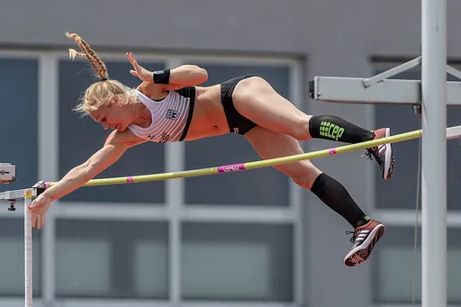
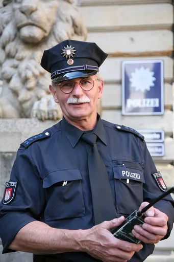
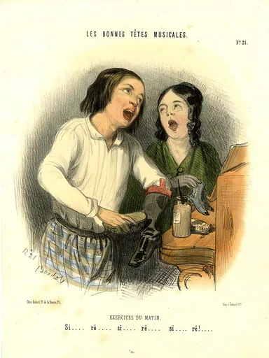

Reject an image by adding its slug to public/charades/charades-actions/reject.txt (append ! to keep it word-only), then re-run node scripts/genimages.mjs.

Pole vault pole-vault CC BY-SA 4.0 · Isiwal · source

Police officer police-officer CC BY-SA 2.5 · Daniel Schwen · source

Polishing shoes polishing-shoes Public domain · Print made by: Frédéric Bouchot Printed by: Aubert & Cie Published by: Aubert & Cie · source